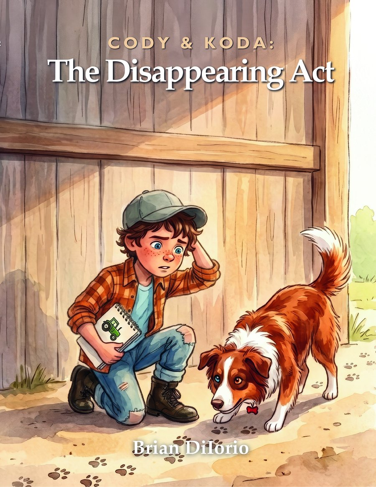

Something is disappearing from the farm, and Cody wants to know why.
First it’s Koda’s favorite rope toy. Then Dad’s work glove. Then Maddie’s hair tie and Mom’s good ribbon, gone without a trace. Even Cody’s red county fair ribbon isn’t safe.
Cody has a suspect: Nimbus, the barn cat who’s been slipping off at odd hours all week. But when Cody and Koda finally catch up to her, they don’t find trouble. They find a secret worth keeping.
A story about paying attention, trusting your gut, and the kind of mystery that ends in something better than an answer.
Book 2 is in the works right now. Reserve your copy today and it will arrive the day it releases.
Join the mailing list for the release date, plus a welcome code for the shop.
Join the Mailing List